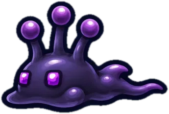

Tap a stage to read its story.
Barely taller than a fist, Vylite is a small purple slime puddle with two stubby arms and a pair of wide, slightly dazed eyes peering upward. A fringe of dark slime drapes around its base like a little skirt, and it leaves a faint violet trail on the cave floor. In the Shadow Caves it clusters with others near glowing fungi, absorbing the faint purple glow into its body until it shimmers. It hisses softly at anyone who shines a light too close.
Field note: Vylite can flatten itself paper-thin under a rock, then silently reform on the other side - it treats the trick as a greeting.
Shadow Caves. Vylite and its family are found in the Shadow Caves. See everyone who lives there.
Share a Bond Food that matches its types to become friends. Vylite loves:
A Bond Food is not a trick. It joins your spirit with the Kimuro's spirit, and only when it chooses you.
Print the Kimuro adventure packs: mazes, cards, a board game and Bond Mark medals.
See the printable packs